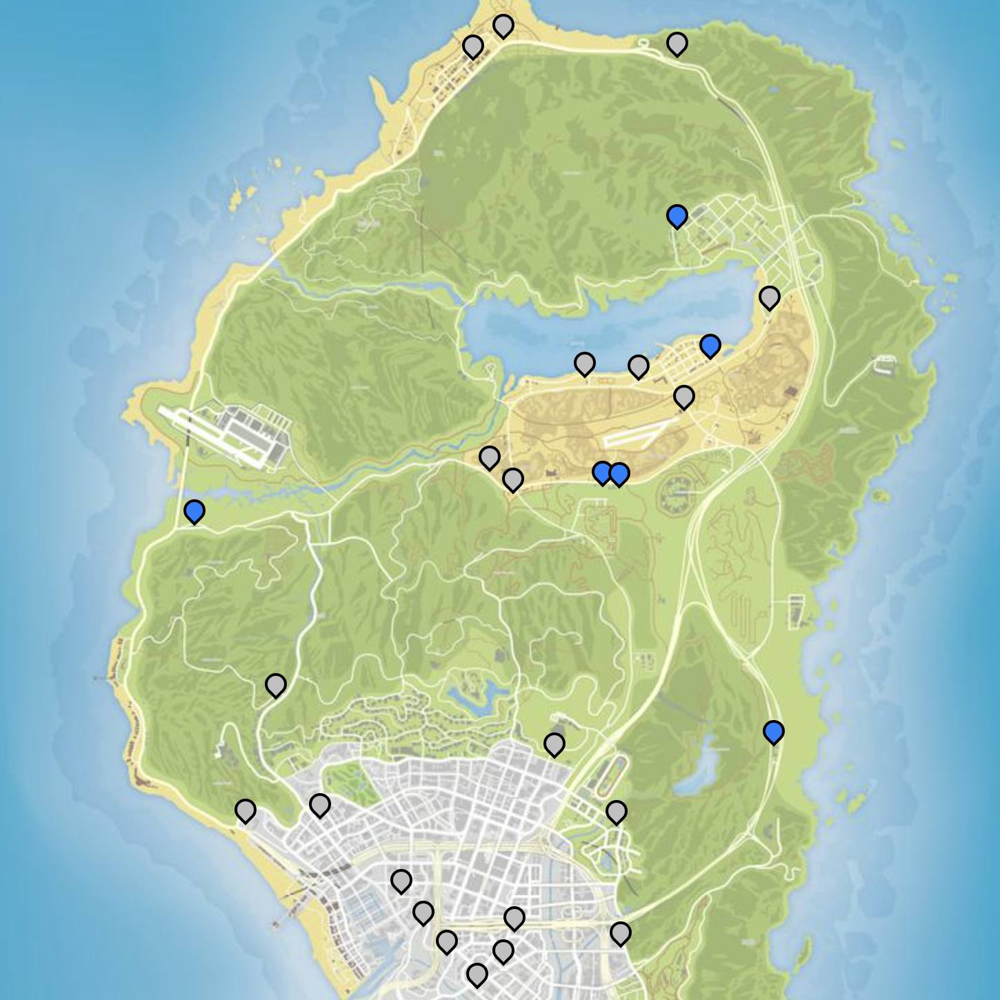

4 Re-enactment Photography
//general introduction on the development of photorealism in games, the relationship between photography and CGI, the remediation of photographic images and the analog apparatus, the player as photographer situated in the tradition of conceptual photographers like Sherrie Levine and Sturtevant, the copy as a conceptual approach that create new meaning through a similar image but a different context…
26 Gasoline stations in GTA V by Lorna Ruth Galloway
 artwork text
artwork text
More about 26 Gasoline stations in GTA V
Getting There

- Globe Oil Gas Station, Innocence Blvd & Alta St, South Los Santos
- LTD Gas Station, Davis Ave & Grove St, South Los Santos
- LTD Gas Station, Mirror Park Blvd & W Mirror Dr, Mirror Park
- Globe Oil Gas Station, Clinton Ave & Fenwell Pl, Vinewood Hills
- Xero Gas Station, Strawberry Ave & Capital Blvd, South Los Santos
- RON Gas Station, Davis Ave & Macdonald St, South Los Santos
- Xero Gas Station, Calais Ave & Innocence Blvd, Little Seoul
- LTD Gas Station, Lindsay Circus & Ginger St, Little Seoul
- RON Gas Station, N Rockford Dr & Perth St, Morningwood
- Xero Gas Station, Great Ocean Hwy, Pacific Bluffs